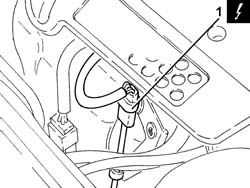
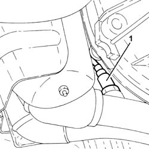
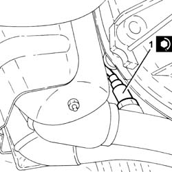
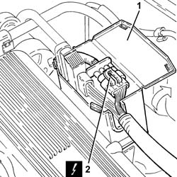
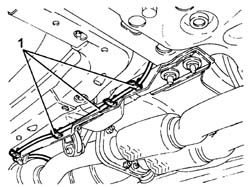
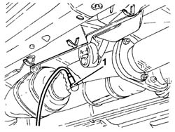
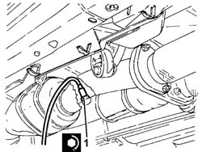

1080B96 LEFT REAR LAMBDA SENSOR ON CATALYTIC CONVERTER R R
- Path
- Procedures > 10 ENGINE UNIT > 1080 EXHAUST EMISSION CONTROL SYSTEM > 1080B EXHAUST EMISSION CONTROL SYSTEM > 1080B96 LEFT REAR LAMBDA SENSOR ON CATALYTIC CONVERTER R R
- Kind
- repair procedure (removal / refitting; the operation number is the code)
- Applies to
- engines: 2.0 JTS, 3.2 V6; all production periods
- Interactive page
- https://sloeber94.github.io/elrnDB-aGt/en/#/125001126
Applies to: engines: 2.0 JTS; all production periods
 Removing
Removing
 Refitting
RefittingPosition the vehicle on the ramp
Ensure that the ignition key is in the OFF position, then disconnect the negative battery terminal (-).
Name | Connector | |
|---|---|---|
- | Battery | See A1B BATTERY ( BATTERY NEGATIVE ) |
1. Disconnect the electrical connection for the rear left Lambda sensor to the catalytic converter and release it from its mounting bracket.
Name | Connector | |
|---|---|---|
1 | Lambda sensor on catalyzer | See K17 LAMBDA SENSOR ON CATALYZER ( CONNECTORS ) |

Applies to: engines: 2.0 JTS; all production periods
Proceed with removal
Op. 7055B54 UNDER-ENGINE GUARD - R R
1. Undo and remove the left rear Lambda sensor for the catalytic converter.

Applies to: engines: 2.0 JTS; all production periods
Refitting
Removing1. Place the left rear Lambda sensor for the catalytic converter back in its housing and tighten it to the recommended torque.
 | Fastening | Component | Ø | Value (daNm) |
|---|---|---|---|---|
1 | - | LAMBDA SENSOR BEHIND LEFT CONVERTER | M18 | 4.0 ÷ 5.0 |

Applies to: engines: 2.0 JTS; all production periods
Proceed with removal
Op. 7055B54 UNDER-ENGINE GUARD - R R.
Connect the electrical connection for the left rear Lambda sensor for the catalytic converter and secure it to the mounting bracket.
Connect the negative (-) battery terminal
Remove the car from the ramps.
Applies to: engines: 3.2 V6; all production periods
Removing
RefittingPlace the car on the ramp.
Ensure that the ignition key is in the OFF position, then disconnect the negative battery terminal (-).
Name | Connector | |
|---|---|---|
- | Battery | See A1B BATTERY ( BATTERY NEGATIVE ) |
1. Open the electrical connections box cover.
2. Remove the connections and disconnect the electrical connection for the left rear Lambda sensor for the catalytic converter.
Name | Connector | |
|---|---|---|
2 | Lambda sensor on catalyzer | See K17 LAMBDA SENSOR ON CATALYZER ( CONNECTORS ) |
Release the electrical wiring for the left rear Lambda sensor for the catalytic converter from the fastenings in the engine bay.

Applies to: engines: 3.2 V6; all production periods
Proceed with removal
Op. 7055B54 UNDER-ENGINE GUARD - R R
1. Release the electrical wiring for the left rear Lambda sensor for the catalytic converter from the underbody fastenings.

Applies to: engines: 3.2 V6; all production periods
1. Undo the left rear Lambda sensor from the catalytic converter using a suitable spanner and remove it.

Applies to: engines: 3.2 V6; all production periods
Refitting
Removing1. Place the left rear Lambda sensor for the catalytic converter back in its housing and tighten it to the recommended torque.
| Fastening | Component | Ø | Value (daNm) |
|---|---|---|---|---|
1 | - | LAMBDA SENSOR BEHIND LEFT CONVERTER | M18 | (Catalytic converter assembly side) 4.1 ÷ 5.0 |

Applies to: engines: 3.2 V6; all production periods
Secure the electrical wiring for the left rear Lambda sensor for the catalytic converter to the underbody fastenings.
Proceed with refitting
Op. 7055B54 UNDER-ENGINE GUARD - R R.
Secure the electrical wiring for the left rear Lambda sensor for the catalytic converter to the engine bay fastenings.
Connect the electrical connection for the left rear Lambda sensor for the catalytic converter.
Refit the electrical connections, then close the electrical connections box cover.
Connect the negative (-) battery terminal
Remove the car from the ramps.